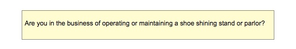
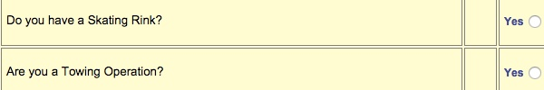
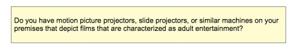
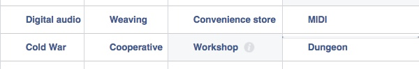

Aaron Taylor Kuffner: Gamelatron Sanctuary
Hammer Museum
11am - 8pm (closes Sunday)
FREE
This immersive sonic experience comprises a five-part kinetic sculpture that combines traditional Indonesian instruments with modern robotics. Inspired by traditional Indonesian Gamelan—percussion-based ensemble music—and created in partnership with Balinese master craftsmen, Kuffner’s kinetic sculptures connect the rich cultural history of Indonesia with contemporary robotics and orchestration. The installation will include a five-part kinetic sculpture, the Gamelatron Bunganya Dewa (“Flowers of the Gods” in Indonesian), which will play site-responsive compositions throughout the day for the duration of the exhibition. Considered a sanctuary by the artist and replete with comfortable seating, the installation is intended to provide a respite for visitors.
LINK

Alex The Brown: Obscura
Coaxial
7pm - 10pm
FREE?
Obscura is a new show by photo/video artist Alex the Brown. The show consists of work taken in a documentary manner ~ photos that are of this world, but show this world as alien and strange, with subjects often obscured or distorted in-camera, visually just out of reach. The photos are curated together to create a new narrative, recontextualized by their juxtaposition on light boxes throughout the gallery. Additionally, hybrid photo/video pieces will explore transforming the images through motion editing. As a sonic companion for the opening, modular synth maestro Baseck will provide an aural soundtrack for the work.
LINK
Perpetual Dawn-Obscura Afterparty-Peaking Lights Acid Test(Live)+PD DJ's
UNION
10pm - 3am
FREE before 11pm/$5 advance/$10 at door after 11
Live set from Peaking Lights Acid Test. With residents Dahlia Lachs, Kid606 , Eric Parren and special guest Moka.
LINK

Jewel's Catch One Documentary L.A. Screening & Dance Party
Renberg Theater
1:30pm - 6:30pm
$25 JEWEL'S CATCH ONE celebrates the legacy of a legendary Los Angeles nightclub, Catch One, and the life-changing impact its owner, Jewel Thais-Williams, had on her community breaking down racial and cultural barriers and building the oldest black-owned disco in America. Jewel’s story celebrates music, fashion, celebrities and activism that helped changed the course of our country. One of the original safe spaces for disenfranchised communities, The Catch also served as a refuge for many during the AIDS crisis. As her club grew to become known as the unofficial “Studio 54 of the West Coast,” Jewel became a national model for how to fight discrimination and serve the less fortunate as she fought tirelessly against racism, homophobia, and hate for over 4 decades.
LINK

ARTSTUFF.WTF is a minimal website listing page for selected mostly DIY art (and etc) events going on around Los Angeles. It is a personal list of 4 - 6 events sent out to friends weekly, and made available online here for bookmarking and quick reference. There is an archive of past listings. Sign up to receive weekly emails. Made by Lee Tusman.
